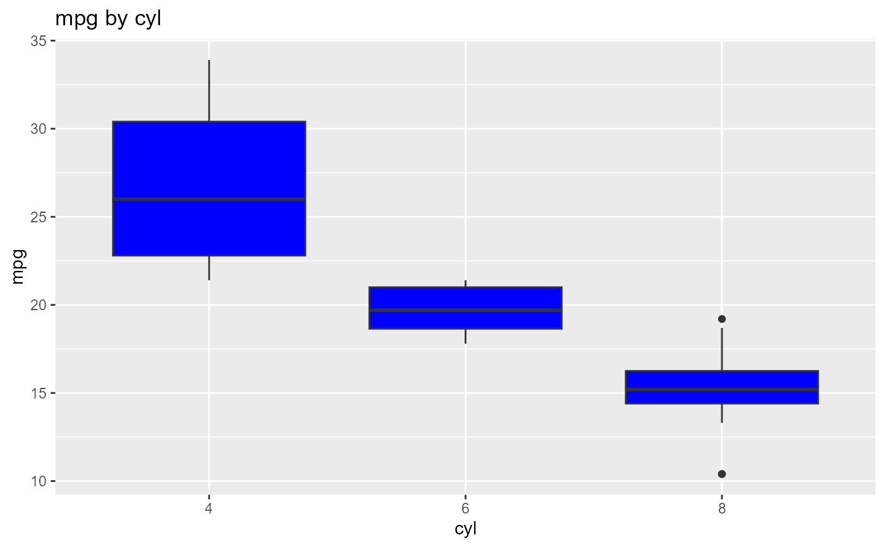

Descriptive statistics of a continuous variable for the different levels of
a categorical variable. boxplot.group_summary() creates boxplots of
the continuous variable for the different levels of the categorical variable.
Usage
ds_group_summary(data, group_by, cols)
# S3 method for class 'ds_group_summary'
plot(x, print_plot = TRUE, ...)Value
ds_group_summary() returns an object of class "ds_group_summary".
An object of class "ds_group_summary" is a list containing the
following components:
- stats
A data frame containing descriptive statistics for the different levels of the factor variable.
- tidy_stats
A tibble containing descriptive statistics for the different levels of the factor variable.
- plotdata
Data for boxplot method.
Examples
# ds_group summary
ds_group_summary(mtcarz, cyl, mpg)
#> by
#> -----------------------------------------------------------------------------------------
#> | Statistic/Levels| 4| 6| 8|
#> -----------------------------------------------------------------------------------------
#> | Obs| 11| 7| 14|
#> | Minimum| 21.4| 17.8| 10.4|
#> | Maximum| 33.9| 21.4| 19.2|
#> | Mean| 26.66| 19.74| 15.1|
#> | Median| 26| 19.7| 15.2|
#> | Mode| 22.8| 21| 10.4|
#> | Std. Deviation| 4.51| 1.45| 2.56|
#> | Variance| 20.34| 2.11| 6.55|
#> | Skewness| 0.35| -0.26| -0.46|
#> | Kurtosis| -1.43| -1.83| 0.33|
#> | Uncorrected SS| 8023.83| 2741.14| 3277.34|
#> | Corrected SS| 203.39| 12.68| 85.2|
#> | Coeff Variation| 16.91| 7.36| 16.95|
#> | Std. Error Mean| 1.36| 0.55| 0.68|
#> | Range| 12.5| 3.6| 8.8|
#> | Interquartile Range| 7.6| 2.35| 1.85|
#> -----------------------------------------------------------------------------------------
# boxplot
k <- ds_group_summary(mtcarz, cyl, mpg)
plot(k)

# tibble
k$tidy_stats
#> # A tibble: 3 × 15
#> cyl length min max mean median mode sd variance skewness kurtosis
#> <fct> <int> <dbl> <dbl> <dbl> <dbl> <dbl> <dbl> <dbl> <dbl> <dbl>
#> 1 4 11 21.4 33.9 26.7 26 22.8 4.51 20.3 0.348 -1.43
#> 2 6 7 17.8 21.4 19.7 19.7 21 1.45 2.11 -0.259 -1.83
#> 3 8 14 10.4 19.2 15.1 15.2 10.4 2.56 6.55 -0.456 0.330
#> # ℹ 4 more variables: coeff_var <dbl>, std_error <dbl>, range <dbl>, iqr <dbl>